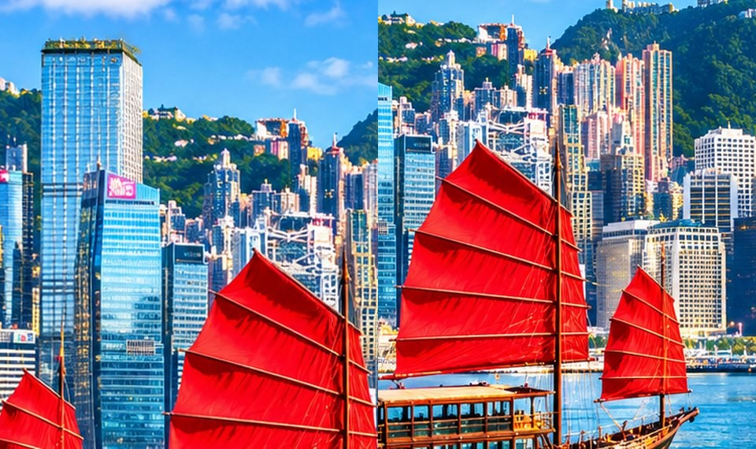

كولون Kowloon · 九龍
تسيم شا تسوي ومونغ كوك، الأسواق والمعالم
149 موقعًا في الدليل7 مناطق فرعية
🔎 البحث في جميع الأحياء والتصنيفات
تم توسيع الدليل ليشمل أحياء إضافية؛ بعض بيانات الأماكن تحتاج تأكيد التشغيل قبل الزيارة. عروض الإضاءة موسمية وتتغير مواعيدها؛ راجع الرابط الرسمي.